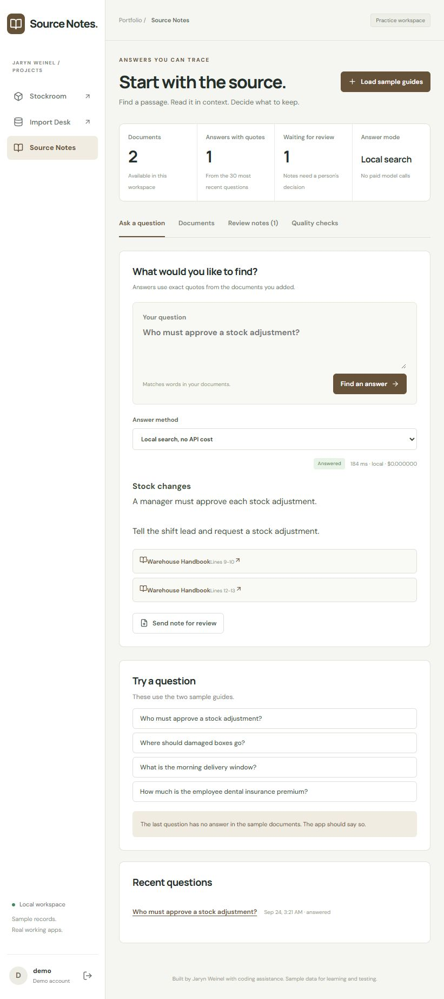
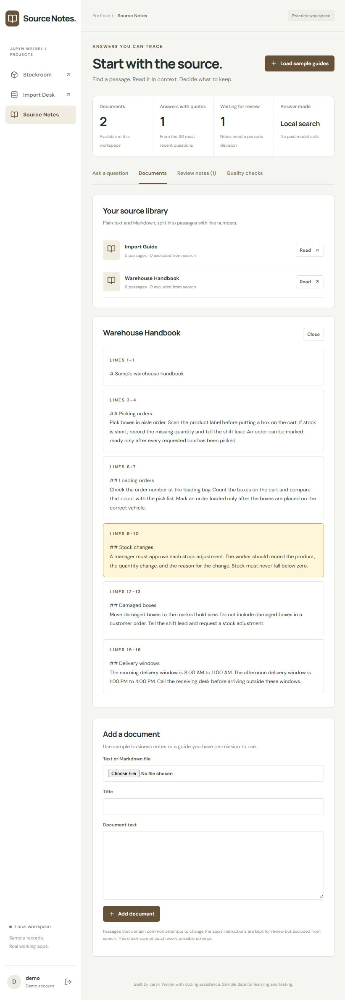
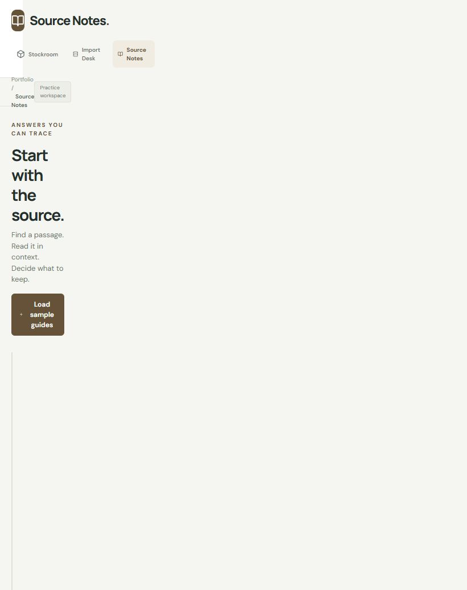

1. Ask a question.
The sample question asks who must approve a stock adjustment. The result includes an exact source quote, passage links, response time, and answer mode. A question without a matching passage receives no answer.
{kind=link}

Python / Document search / September 2026
Find a passage, open its source, and review a note before approving it.
A short answer is easier to check when its source is close by. Source Notes searches a small set of text documents and returns exact quotes with links to their original passages.
This page shows the local app. You can run it from the public repository using the setup steps in its README.
These screenshots were taken from the running app on September 24, 2026. They show sample states; they are not a continuous recording.
The sample question asks who must approve a stock adjustment. The result includes an exact source quote, passage links, response time, and answer mode. A question without a matching passage receives no answer.

A citation opens the source document at the matching passage. Original line numbers make it easier to inspect context. The document view preserves the original text, including its Markdown marks.

Sending an answer for review creates a pending note. It takes another action to approve or reject it. Both actions use the same demo account; this is a review step, not a two-person approval system.

The server checks the passage ID and requires the quote to appear in that passage. A response with an invented quote is rejected.
A match score and word-overlap check reduce weak matches. Eight fixed sample questions include missing information so the app can be checked for appropriate no-answer results.
Matching the source proves where the words came from. It does not prove that they answer the question. The source links and review step let a person make that judgment.
The 22 checks cover local retrieval, missing answers, exact citations, repeated request keys, note review, invalid provider responses, and sample prompt-injection attempts. All eight fixed local evaluation questions passed.
On September 24, 2026, the Docker build and test workflow passed on GitHub. The build checks TypeScript and produces the frontend files. Integration checks use a separate PostgreSQL database.
The local vectors match words, not meaning. Prompt-injection pattern checks are limited. The live model path still needs a configured API and evaluation. The app has one demo account and no public backend.
I used LLM help with implementation, tests, documentation, and explanations of tools I was learning. The code guides follow each request through the app so I can study the decisions and practice explaining them. These are personal projects, separate from my warehouse jobs.
{kind=link}
{kind=link}